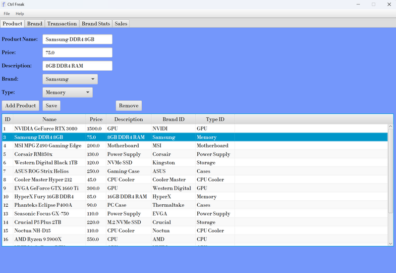
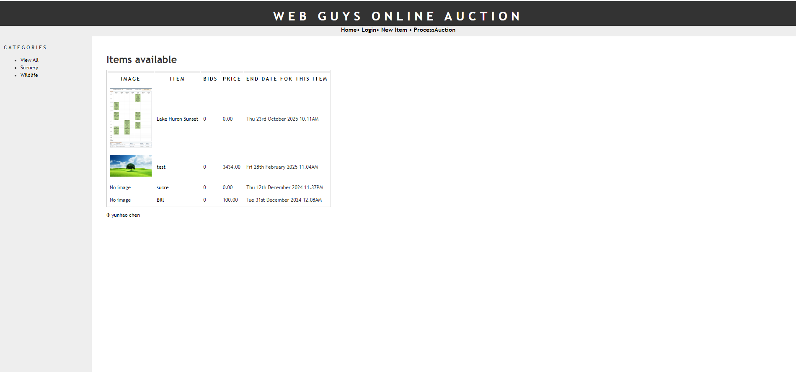
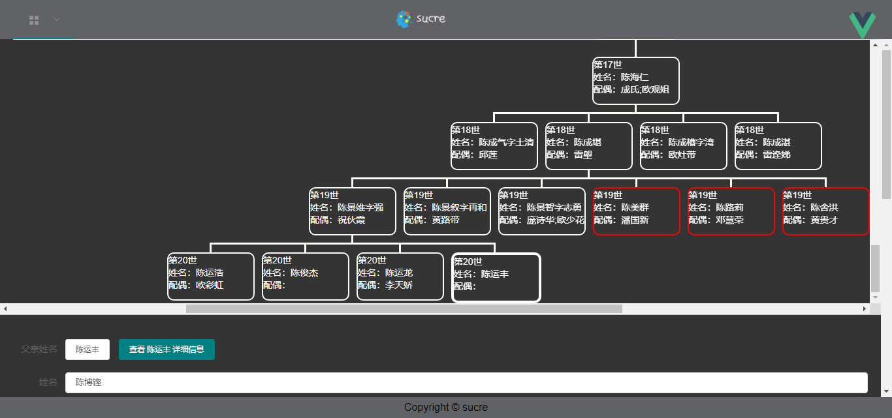
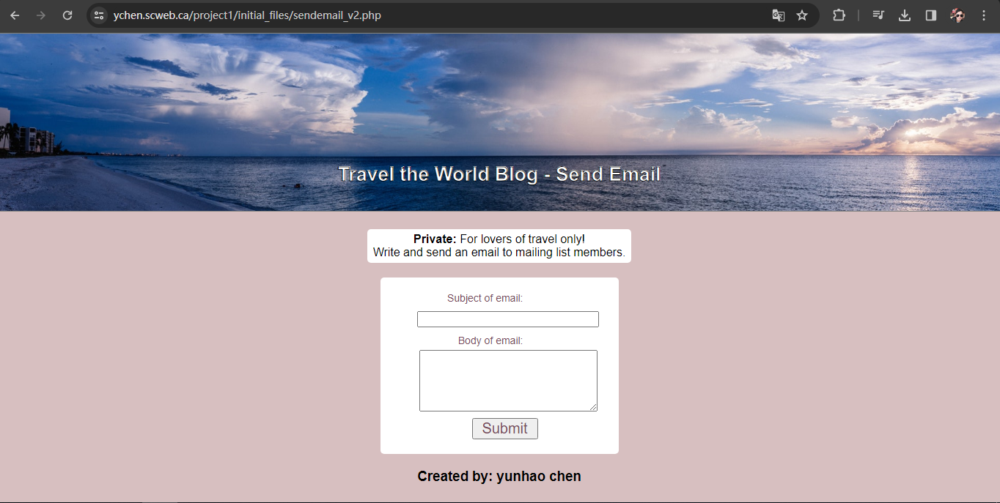

Includes functionalities for CRUD operations on products and transactions, and charts to visualize inventory stock and sales data.
It's a fun project, we collaborated good as a group, we are confident at using JavaFx and Github commends for our project.
Ctrl Freak
Ctrl Freak is my final group project for Java 3, which centralized database system designed for managing computer shop inventory and transactions,Includes functionalities for CRUD operations on products and transactions, and charts to visualize inventory stock and sales data.
It's a fun project, we collaborated good as a group, we are confident at using JavaFx and Github commends for our project.

In this project, I learned how to use Paypal SDK for receiving money, PHP Composer for libraries management, PDO for connecting with database and implements CURD methods.
Auction
Auction is my PHP final project, it's a website similar to ebay, users can post item on the website, while other user may submit a bid on it.In this project, I learned how to use Paypal SDK for receiving money, PHP Composer for libraries management, PDO for connecting with database and implements CURD methods.

For the back end, I use java + spring-boot, and nginx for web container, MySQL for database, along with myBatis to connect with Java
It's a fun project, I learn a lot in building it.
This project is a family tree record, for big Chinese family tree tracking. It is useful to make the family relationship easier to understand for young generations.
Personal Website
This is my personal website created in 2019, in this project, I used Vue framework to make it simpler for the front pageFor the back end, I use java + spring-boot, and nginx for web container, MySQL for database, along with myBatis to connect with Java
It's a fun project, I learn a lot in building it.
This project is a family tree record, for big Chinese family tree tracking. It is useful to make the family relationship easier to understand for young generations.
Poker Game
This is our final project for JAVA, We build a poker game using javafxThe rules of Poker Game are very simple
it is a one player game where the user will be dealt three cards, and the CPU will be dealt three cards as well.
You cannot see each other's cards you can swap your cards to match up against a different card of the CPUs.
Then once you press battle your cards will be to battle together and the person with larger cards wins.
You are offered to play again once the game is finished.

From this program, we learn about creating database table, insert records, fetch records, deleting records in PHP.
Using mysqli function in PHP, we could easily manipulate the database using SQL script.
With the build-in function mail() in PHP, we fetch all the email address in database, and sending an email to all email addresses.
Travel The World Mailing List
This is one of the projects for PHPFrom this program, we learn about creating database table, insert records, fetch records, deleting records in PHP.
Using mysqli function in PHP, we could easily manipulate the database using SQL script.
With the build-in function mail() in PHP, we fetch all the email address in database, and sending an email to all email addresses.
Yatzy Score
This is one more advanced project for PHPIn this project, we Using mysqli function to connect with the database using SQL script.
We also using SQL script to sort data and display on the page.
Additionally, using file function in PHP to upload file to the sever, and set limit of the file type and size of the file when user uploading it.